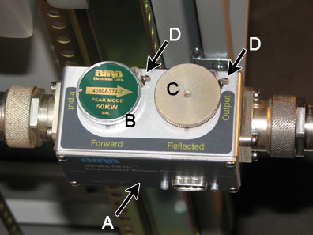
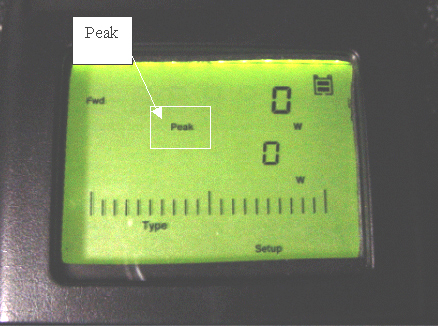

GE Exclusive Use Only
Direction 5670006, Rev# 1
Discovery MR750w GEM Service Methods
Module Version 12.0, Version Date 10/21/11
GE Exclusive Use Only |
| Required Persons | Preliminary Reqs | Procedure | Finalization |
|---|---|---|---|
| 1 | Not Applicable | 2 hours | Not Applicable |
Follow this procedure after Installing the Multi-Nuclear Spectroscopy (MNS) to calibrate the 8kW AMT Amplifier for 3.0T.
| Item | Qty | Effectivity | Part# | Manufacturer | |
|---|---|---|---|---|---|
| RF Power Measurement Kit | 1 | - | 5307511-2 | - | |
| Digital Multimeter | 1 | - | 46-194427P84 | - | |
| 3.0T 31P T/R Switch (this will be available on site with customer) | 1 | - | 2354050 | - | |
| Small Phillips Head Screwdriver (size #0 or #00) with at least 2 inch length | 1 | - | - | - | |
| ||||
| FATAL ELECTRIC SHOCK HAZARD ! | ||||
| FATAL ELECTRICAL VOLTAGES exist THROUGHOUT THE MNS CABINET. | ||||
| TO PREVENT FATAL ELECTRIC SHOCK, MAKE SURE THE MNS RF AMPLIFIER IS DISABLED WHEN CONFIGURING THE CALIBRATION TOOLS. |
| ||||
| PERSONAL INJURY! | ||||
| POSSIBLE RF BURN WHEN DISCONNECTING HELIAX CABLES FROM THE RF AMPLIFIER. | ||||
| ensure THAT THE SCAN DESKTOP ICON DISPLAYS THE “IDLE” MESSAGE AND THE MNS EXciter rf-enable SWITCH IS IN THE "DISABLE" (down) POSITION. |
| ||||
| Possible equipment damage to RF amplifier connected with an improper load to its output. Do not operate the RF amplifier with an improper load connected to its output. Doing so may permanently damage the amplifier | ||||
Disable the T/R fault monitor on the driver module with the following steps:
Ensure the system is idle and all coils have been removed from the magnet bore.
Open the front door of the PEN Cabinet.
On the front of the driver module, set the T/R switch to Disable. This will disable the T/R fault reporting (see Illustration 1).
| NOTE: | HV and DD should remain set to Enable. |
Illustration 1: Driver Module Switch

Move the RF Enable S2 switch on MNS Exciter into disable (down) position (see Illustration 2).
Illustration 2: RF Enable Switch

Prepare the amplifier for calibration, as follows:
Remove the front cover of the AMT amplifier.
| NOTE: | There are 50+ screws. This step takes about eight minutes. |
With the covers removed, notice the two holes for gross (6.0dB) and fine (0.5 dB) attenuation adjustments as pictured in Illustration 3 and Illustration 4.
| NOTE: | It is possible that these two holes are covered with an external screw. If this is the case, simply remove the screw so that the amplifier looks like the one in Illustration 3. |
Illustration 3: AMT Amplifier with Covers Removed

Indicators point to adjustment points.
Illustration 4: AMT Amplifier Detail of dB Adjustment

Use the digital multimeter to measure the resistance between the dummy load RF connector center pin and the shield. Confirm a reading of 50 ohm (+/- 5 ohm). Replace dummy load if out of range.
Set up the Power Meter Method as shown in Illustration 5.
Illustration 5: Calibrating MNS Amplifier - Power Meter Method

Set up the RF coupler for the AMT 8kW calibration. Choose the correct elements based on the Quick Reference Card provided with the RF Power Measurement Kit (see Illustration 6).
Illustration 6: 8kW RF Power Measurement Kit Quick Reference Card

Insert the 50kW element into the forward sensor port and ensure the arrow points from input to output (see Illustration 7).
As a safety measure, place the 5kW or blank slug element into the reflected port and ensure the arrow points from output to input (if applies) (see Illustration 7).
Lock these elements into place using the locking tab on each sensor (see Illustration 7).
Illustration 7: RF Coupler Set

A | Wattmeter Sensor |
B | Forward Sensor Element |
C | Blank Slug |
D | Sensor Locking Tabs |
Move RF Enable S2 switch on MNS Exciter into enable (up) position (see Illustration 2).
Set up the wattmeter to measure forward maximum power.
Press the ON button on the wattmeter. (If coupler and sensor are not correctly attached to the amplifier, a “No Sensor” message will display)
Select the up arrow button under scale.
For the AMT amplifier calibration, type 50000 to set the range. Press the <Enter> button.
Check the setting by selecting the up arrow under scale once again. Press <Enter> to exit this mode.
Select the up arrow button under Fwd Units to make sure the scale reads “W” (or “kW” on some wattmeters). If the scale reads dBm, select the up arrow button under Fwd Units again to toggle the scale to “W” (or “kW”) on the TOP, forward power scale. Ignore the BOTTOM, reflected power scale value as it is not used during maximum power calibration.
Press the <Shift> button.
Select the up arrow button under Setup. Ensure it reads 43. If not, type the number 43 and press the <Enter> button.
| NOTE: | This action displays the sensor type configured in the wattmeter. This procedure uses sensor Type 43 which is optimized for peak power measurement. |
Illustration 8: Wattmeter Display (Peak Power Measurement)

Select the up arrow button under Type and change the unit of measurement to Peak. The meter will now be configured to read the RF peak power for the 8kW maximum output calibration
Press the [Offset] button on the wattmeter. Enter in the 3.0T MNS 8kW offset value from the RF Power Measurement Kit Quick Reference Card (see Illustration 6).
Connect MNS 31P T/R switch to LPCA.
Landmark in center of head coil area and select [Advance to Scan].
Start the RF/UPM tool:
In proprietary mode:
On the Calibration tab, select [Calibration Wizard].
On the Calibration Wizard screen, select [Click here to start tool].
Select [RF/UPM Cal & Functional Check (MNS)].
At the alert, select [Yes] to open the RF/UPM Tool (shown in Illustration 9).
For the non-proprietary service tool:
On the Common Service Desktop, select the Calibration tab.
From the Calibration menu, select [UPM Tool].
Select [Click here to start this tool] to open the UPM Tool.
Illustration 9: UPM Tool interface

Configure the UPM Tool as follows:
On the UPM tool, set the Task drop-down list to Launch RF Cal.
Set Nuclei to 31P.
Set RF Chain to MNS.
Select Start.
When a popup appears asking if the system is properly set up, click Yes.
The system sets the proper sequence for RF calibration of the MNS channel. This process takes about one minute.
When a popup titled RF Amp Calibration appears, do not select anything.
Illustration 10: RF Amp Calibration popup

Click the Patient icon to go to the Scan workplace.
Illustration 11: Patient icon

If the RF amplifier faults, close the Manual Prescan window and click [Failure] on the RF Amp Calibration popup (Illustration 10). Click [Start] again on the UPM Tool interface and attempt the RF amplifier calibration procedure again. If RF amplifier faults persist, refer to UPM Troubleshooting.
If no power is output from the MNS amplifier during UPM Forward Power calibration, close the UPM Tool and start a New Exam in geservice mode with a patient weight of 50kg. Create a landmark with the 31P TR Switch. Prescribe 31P Func Check series from Service -> MNS Setup menu. Save and Download sequence with any acceptable scan parameters. Open Spectro Prescan, select Start, and let the sequence run for about 10 seconds. Stop the sequence, end the exam, and continue with the UPM calibration.
Slowly increase the TG to 200 or until the wattmeter reads 8kW + 200W/- 800W.
| NOTE: | Make attenuator adjustments slowly. Give the wattmeter about five seconds between changes to settle. If the amplifier faults, reverse the previous adjustments and restart the calibration procedure through the UPM Tool. |
If TG equals 200, but wattmeter reads less than 7.2kW, rotate 0.5dB adjustment control counterclockwise to achieve 8kW +200 / -800W.
If output is still less than 7.2 kW and TG = 200:
Set 0.5dB adjustment control for minimum wattmeter reading.
Rotate 6.0dB adjustment control counter-clockwise by one step.
If wattmeter reads 8kW +200 / -0W before TG reaches 200:
Rotate 6.0dB adjustment control clockwise by one step.
Return to Step 12.
After the amplifier is calibrated to 8kW +200W/-800W at TG = 200, select [Done] to end manual prescan. Switch to the UPM Tool and select [Success] on the RF Amp Calibration popup.
Perform the UPM - MNS Functional Check.
Perform the Multi Nuclear Spectroscopy (MNS) Functional Check.